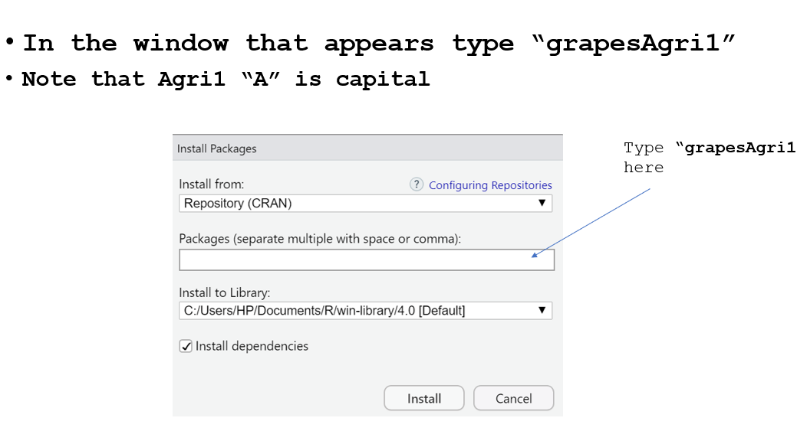
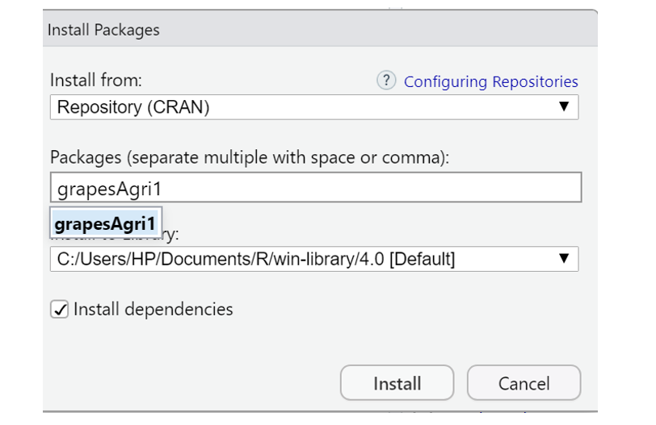

4 Packages and libraries
4.1 Packages
Packages are organised collections of R functions, data, and compiled code. Packages have useful functions to perform specific tasks. Some useful packages for agricultural research are agricolae, agridat, grapesAgri1, lme4 and emmeans.
In the R environment, packages are kept in a directory called “library”. R installs a group of packages by default during installation. Only the default packages are initially available once the R console has been launched. The R application that is getting to use other installed packages needs to be explicitly loaded from package library in order to use them.
4.2 Repositories
A repository is where packages are located so that they can be installed from it. Organizations and developers each have their own local repository, which is often online and open to all. The most widely used R package repositories are: CRAN, BIOCONDUCTOR, GITHUB.
4.2.1 CRAN
Comprehensive R Archive Network(CRAN) is the official repository, It is an international network of ftp and web servers run and managed by the R community. It is coordinated by the R community, and before a package can be published in CRAN, it must pass a number of tests to guarantee that it complies with CRAN rules.
4.3 Base packages
Base (standard) packages come pre-installed with R installations and are regarded as being a part of the R source code. The fundamental R functions are found in base packages, which make it possible to perform common statistical and graphical operations on datasets. Examples of Base packages include stats, graphics, grDevices, utils, datasets, methods and base. The functions available in these Base packages can be used for basic operations on the data set. Some of the functions we have discussed earlier in Chapter 3, like mean(),min, log10,as.data.frame etc.
R is distributed with fourteen base packages: base, compiler, datasets, grDevices, graphics, grid, methods, parallel, splines, stats, stats4, tcltk, tools and utils.
In addition, the following “recommended packages” from CRAN are included with binary distributions of R: KernSmooth, MASS, Matrix, boot, class, cluster, codetools, foreign, lattice, mgcv, nlme, nnet, rpart, spatial and survival.
4.4 Other packages
Any user could develop a package and make it available through any of the repositories. There are thousands of helpful R packages.
4.5 Installing R Packages
There are numerous ways to install R Packages, which are listed below. You need an active internet connectivity for installing packages.
4.5.1 From CRAN
Installing Packages From CRAN: For installing Package from CRAN we need the name of the package and use the following command:
install.packages("package name") Simply express package name as a character vector in the first argument of the install.packages() function to install more than one package at once:
install.packages(c("grapesAgri1", "MASS")) 4.5.2 From Bioconductor
Bioconductor packages are installed with the BiocManager package, which is itself installed from CRAN:
install.packages("BiocManager")Then pass the names of the desired Bioconductor packages to BiocManager::install():
Older material uses source("https://bioconductor.org/biocLite.R") and biocLite(). That method has been retired; use BiocManager instead.
4.5.3 From github
To install an R package from GitHub, first install the devtools (or the lighter remotes) package from CRAN.
install.packages("devtools") Install the package of interest from GitHub using the following code, where you need to remember to list both the author and the name of the package. In this example, we are installing the grapesAgri1 package created by pratheesh3780.
devtools::install_github("pratheesh3780/grapesAgri1") 4.6 Load packages
Once you successfully install an R package; you need to load the package for use in the session. library() function can be used to load package.
Example
library(grapesAgri1)4.6.1 Load Multiple Packages at Once
We need to first specify a vector of package names:
my_packages <- c("dplyr", "mice", "stringr") # vector of package names
lapply(my_packages, require, character.only = TRUE) # Load multiple packages After running the previous R code, all packages in the vector my_packages are loaded to R.
4.7 Check, Update and Remove
To check what packages are installed on your computer, type this command:
To update all the packages, type this command:
To update a specific package, simply install it again with install.packages("package name"):
install.packages("grapesAgri1") 4.8 Installation using RStudio
Packages can also be installed from the RStudio interface. Step by step installation of package grapesAgri1 is shown below. All other packages can be installed in similar way
- Step 1: Click on the install button as shown below

Figure 4.1: Step 1
- Step 2: Type the name of the package in the window that appears

Figure 4.2: Step 2
- Step 3: Select the package name and click install

Figure 4.3: Step 3
- Step 4: Load the package name by clicking on the check box.

Figure 4.4: Step 4